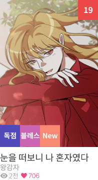

Vue 기반 웹 서비스 퍼블리싱을 진행하며 컴포넌트 단위로 UI를 구조화하고
재사용 가능한 형태로 설계하였습니다.
리스트, 배너, 랭킹 등 반복되는 UI를 컴포넌트로 분리하여
메인, 작품 리스트, 작품 상세, 작품 읽기, 마이페이지 등 공통 페이지를 구현했으며,
유지보수와 확장성을 고려한 구조로 구현하였습니다.
< 몽글몽글 작업 >
작업기간 2022.08 ~ 2023.01
역할 퍼블리싱 / UI 개발
기술스택 HTML5,CSS3,SCSS,JavaScript,vue.js,nuxt.js
site preview
서비스 소개
웹소설 콘텐츠를 탐색하는 사용자와 작품을 등록·관리하는 작가로 구성된 플랫폼 서비스입니다.
서비스 구조
사용자 영역(메인, 리스트, 상세, 읽기)과 작가 영역(작품 등록, 관리, 정산)을 분리하여
각 역할에 맞는 화면 흐름을 설계했습니다.
USER FLOW & SERVICE STRUCTURE
사용자와 작가의 이용 목적이 다른 서비스 구조에 맞춰
탐색형 사용자 흐름과 등록/관리형 작가 흐름을 분리 설계했습니다.
각 역할에 필요한 화면 우선순위를 구분하여 서비스 구조에 맞는 UI를 구현했습니다.
PROJECT KEY POINT
Component Breakdown
State Handling
RESPONSIVE UI
★ Component Breakdown
자유연재 웹소설 플랫폼 구축 과정에서 메인, 작품 리스트, 작품 상세, 작가 등록 및 정산 페이지 등 주요 화면을 컴포넌트 단위로 분리하여 퍼블리싱했습니다.
반복적으로 사용되는 UI를 공통 구조로 설계해 재사용성과 유지보수성을 높였습니다.
예시 1. 작품 카드 컴포넌트
리스트/추천/검색 결과에서 공통 사용
썸네일, 제목, 작가명, 태그, 상태값 노출
데이터에 따라 뱃지/노출 항목 분기
반복되는 리스트형 UI를 공통 카드 구조로 정리하여 화면 확장 시 재사용할 수 있도록 구성
예시 2. 선택 패턴을 통일한 컴포넌트
반복되는 리스트형 UI를 공통 카드 구조로 정리하여 화면 확장 시 재사용할 수 있도록 구성
다양한 화면에서 사용되던 선택형 UI(라디오, 체크박스, 셀렉트 박스)를 공통 Selection 컴포넌트로 정리하고,
단일 선택/복수 선택/상태 표시를 props 기반으로 제어할 수 있도록 설계했습니다.
이를 통해 동일한 UI 패턴을 유지하면서도 다양한 화면에 유연하게 적용할 수 있도록 했습니다.
★ State Handling
자유연재 웹소설 플랫폼 구축 과정에서 Vue.js 컴포넌트 구조를 기반으로 주요 화면을 퍼블리싱했습니다.
메인 페이지, 작품 리스트, 작품 상세, 작가 등록 및 정산 페이지 등 반복적으로 사용되는 UI를 컴포넌트 단위로 분리하여 화면을 구성했습니다.
예시 1. 사용자 유형에 따른 메뉴 분기
일반 사용자와 작가 사용자의 목적이 다르기 때문에
로그인 상태 및 권한에 따라 메뉴 구성과 진입 가능한 화면을 다르게 노출했습니다.
이를 통해 사용자 유형에 맞는 기능만 우선적으로 보여줄 수 있도록 구조를 설계했습니다.
예시 2. 작품 상태에 따른 노출 분기

인증된 사용자
▶ 정상 노출
미인증 사용자
▶ 콘텐츠 블라인드
+ 인증 유도 UI 제공
전체 이용 가능
▶ 제한 없이 콘텐츠 노출
사용자 성인 인증 여부에 따라 콘텐츠 노출을 분기하고, 미인증 사용자에게는 블라인드 처리된 UI를 제공하여
접근 권한에 따른 콘텐츠 제어 흐름을 구현했습니다.
예시 3. 데이터 유무에 따른 화면 처리
사용자-작가: 리스트 데이터 없는 경우
사용자-작가: 리스트 데이터 있는 경우
리스트 데이터가 없는 경우, 등록된 작품이 없는 경우, 검색 결과가 없는 경우 등
빈 상태 화면을 별도로 구성하여 사용자가 다음 행동을 이해할 수 있도록 했습니다.
단순 비노출이 아닌 안내 메시지와 액션을 함께 제공하는 방향으로 정리했습니다.
3. BEM 방법론을 활용한 SCSS 구조화
자유연재 웹소설 플랫폼 구축 과정에서 Vue.js 컴포넌트 구조를 기반으로 주요 화면을 퍼블리싱했습니다.
메인 페이지, 작품 리스트, 작품 상세, 작가 등록 및 정산 페이지 등 반복적으로 사용되는 UI를 컴포넌트 단위로 분리하여 화면을 구성했습니다.